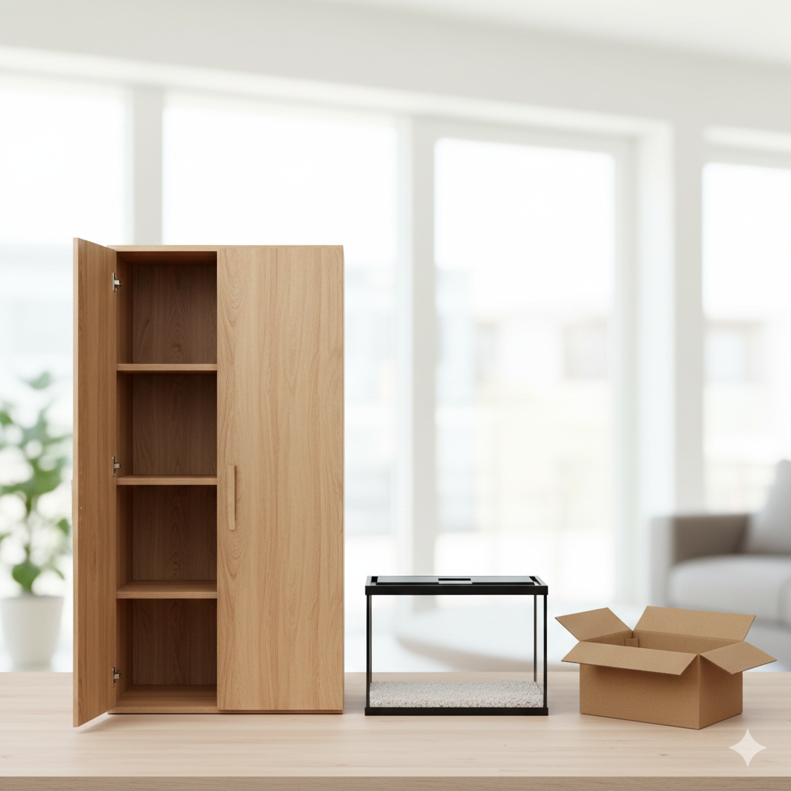

Putar balok pakai mouse/jari!
Balok adalah kotak panjang yang punya 6 sisi persegi panjang. Ada 3 pasang sisi sama besar. Balok beda sama kubus karena:
6 sisi persegi panjang, 3 pasang sama besar
12 garis: 4P + 4L + 4T
8 sudut, ketemu 3 garis
12 garis miring di sisi
4 garis tembus balok
6 bidang miring tebal
Langkah mudah:
Contoh: p=5, l=3, t=4
L = 2(15 + 20 + 12) = 94 cm²
Langkah mudah:
Contoh: p=5, l=3, t=2
V = 5 × 3 × 2 = 30 cm³
Langkah mudah:
Contoh: p=5, l=3, t=4
K = 4(12) = 48 cm
Langkah mudah:
Contoh: p=5, l=3, t=4
d = √(25+9+16) = 7,07 cm
Sebuah kotak buku berukuran panjang 40 cm, lebar 25 cm, tinggi 15 cm. Hitunglah luas seluruh sisi kotak tersebut!
Rumus: L = 2(pl + pt + lt)Kotak susu UHT berukuran p=8 cm, l=6 cm, t=20 cm. Berapa liter susu yang muat dalam kotak tersebut?
Rumus: V = p × l × t (1 liter = 1000 cm³)Sebuah batu bata berukuran 22 cm × 10 cm × 5 cm. Berapa keliling rangka 1 buah bata?
Rumus: K = 4(p + l + t)Balok kayu ukuran 30 cm × 20 cm × 10 cm. Berapa panjang garis miring ruang (dari 1 sudut ke sudut berlawanan)?
Rumus: d = √(p² + l² + t²)Lemari baju: p=120 cm, l=60 cm, t=200 cm. Pak Joko mau cat seluruh lemari. Berapa cm² cat yang dibutuhkan?
Rumus lengkap L = 2(pl + pt + lt)Dalam kehidupan sehari-hari, banyak benda di sekitar kita yang berbentuk balok, seperti lemari, buku, kotak susu, dan batu bata.
Dengan memahami balok, kita bisa menghitung:

Lemari berbentuk balok. Kita bisa menghitung kebutuhan nyata: